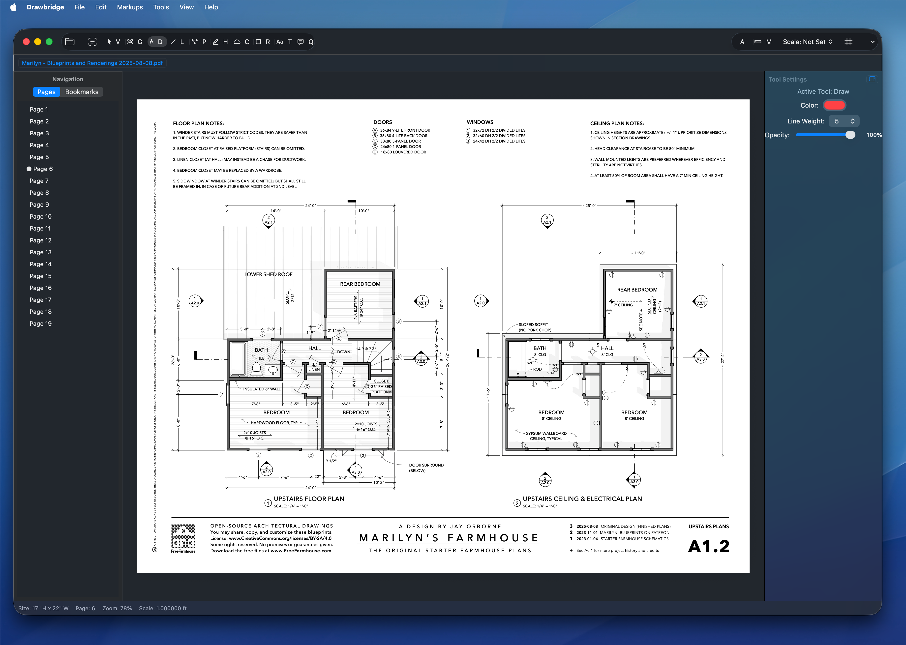

🧭
Navigate large sets
Use page thumbnails, bookmarks, viewing history, search, and Go to Sheet to stay oriented in multi-page architectural PDFs.
Drawbridge is a native macOS PDF markup and takeoff app for architects, designers, and engineers. Navigate drawing sets, generate bookmarks and hyperlinks, add vector markups, review annotations, and save clean project files without a sluggish browser wrapper.

Built for drawing sets
Use page thumbnails, bookmarks, viewing history, search, and Go to Sheet to stay oriented in multi-page architectural PDFs.
Create sheet names, PDF bookmarks, and internal hyperlinks from drawing references, with review before applying changes.
Draw with pen, shapes, arrows, callouts, text boxes, highlights, line weights, colors, fills, and keyboard shortcuts.
Open the Markups List to find comments by page, type, text, or author, jump to items, and batch-delete selected markups with Undo.
Flatten supported consultant annotations into page content while preserving Drawbridge recovery data for reopening workflows.
Built for macOS and Apple Silicon, with fast save paths and lossless file reduction designed for production drawing review.
Latest update
The latest notarized release keeps the 6.0 version and replaces the downloads with focused usability and PDF compatibility fixes.
Read release notesEdges and corners are easier to grab, including clicks near visible strokes.
Delayed refreshes preserve newly selected rows instead of clearing your context.
Switching drawing tools or pressing Escape clears stale selection outlines.
Text boxes on rotated sheets save upright as shown while editing, including Unicode text.
Workflow
Start from the PDF you already have and navigate by pages, bookmarks, sheet search, or text search.
Generate sheet labels and links, then add comments, shapes, highlights, measurements, and freehand notes.
Save PDF changes, create a separate copy, flatten supported annotations, or reduce file size losslessly.